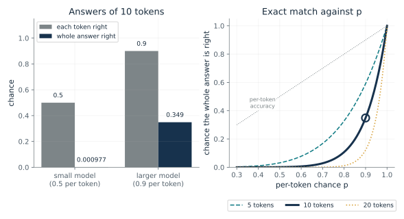
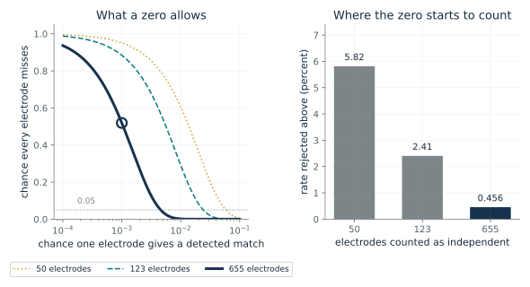
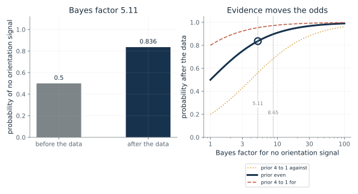
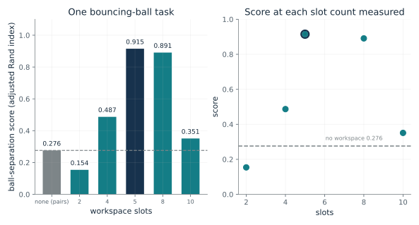
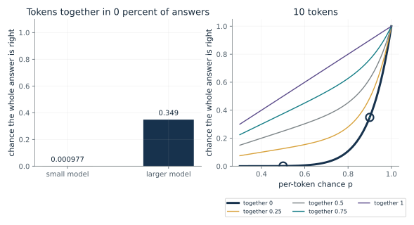

Why does a whole answer jump when each piece improves steadily?
From Chapter 31, A sudden jump in a score can come from the scoring rule
If each token of a ten-token answer is right with the same chance, how does the chance of a whole right answer change as that chance rises?
A whole answer is right only if every token is. With the same chance p each time, the chances multiply, so the product shrinks as the answer gets longer. When p is near 0.5 the product is almost zero for ten tokens, and when p reaches 0.9 it is large enough to see. Per-token accuracy changed little, and the exact-match score changed a lot.
Predict first: Per-token accuracy rises from 0.5 to 0.9. Predict the chance of a whole ten-token answer for each.

Per-token chance p: 0.9 · Tokens in the answer (L): 10
What happens: A small model at 0.5 per token gets a whole answer right 0.001 of the time, and 0.9 gives 0.349. Per-token accuracy rose by a factor of 1.8 while exact match rose by about 357 times: a steady improvement looks like a leap.
With each of 10 tokens right with chance 0.9, the whole answer is right with chance 0.349. To get an even chance of a whole answer at length 10, each token must be right 0.933 of the time.
- Per-token chance p
- 0.9
- Whole answer right (p^L)
- 0.349
- Share of per-token accuracy kept
- 0.387
- p needed for an even chance
- 0.933
A jump in a score can come from the scoring rule and not from a change inside the model. The chapter says a steep rise in a brain measure would likewise need a second observation before anyone calls it a threshold.
Workspace theory expects a fact to enter its shared space all at once, like a switch. The chapter says a sudden jump is easy to see and easy to misread, and no brain study here uses this formula.
Schaeffer and colleagues argue that many reported jumps in language-model ability come from the researcher's scoring rule, with GPT-3 family models on two-digit multiplication as an example. This is a specification of one simple model of scoring, not a measurement of any model.
Show the calculation
0.9^10 = 0.349. Even chance: 0.5^(1/10) = 0.933.
The equations and symbols
- p
- the chance one token is right, between zero and one
- L
- the number of tokens in the answer
- p^L
- the chance all L tokens are right, if tokens are independent
A simplified fixed-length answer with no extra tokens and independent tokens, which the paper says is untrue of real text. The paper does not claim real jumps never happen.
Check your understanding: What per-token chance gives an even chance of a whole ten-token answer?
Book source: Chapter 31, A sudden jump in a score can come from the scoring rule. Illustration C31-D01. Formula. Book formula for the model of Schaeffer and colleagues, with the chapter's round numbers: a small model right half the time per token and a larger one nine times in ten, on ten tokens, giving 0.001 and 0.349. The other values of p and L are the companion's variations. The chapter says the 0.5 and 0.9 numbers are its own arithmetic, not the paper's.
How much can a zero among 655 electrodes rule out?
From Chapter 31, How much a zero can rule out
None of 655 front electrodes matched the predicted burst. If each had the same small chance of a detected match, how likely is that?
If every electrode had the same chance r of showing a detected match, the chance that none does is the chance of one miss multiplied by itself n times. That falls quickly as r or n grows. The rate at which it crosses 5 in 100 depends on n, and n is not known, because neighboring electrodes are related. With fewer independent electrodes the zero rules out less.
Predict first: If each of 655 electrodes had a one in a thousand chance of a detected match, predict the chance that all would miss.

Chance one electrode gives a detected match: 0.001 · Electrodes counted as independent: 655
What happens: All 655 miss with chance 0.519, about even, so a zero would be unsurprising at one in a thousand. Switch to a rate of 0.005 and the chance falls below 5 in 100, so the zero counts against rates higher than about half a percent, under independence.
If each of 655 independent electrodes had a detected-match chance of 0.001, all of them would miss with chance 0.519. A zero rejects rates above about 0.456 percent under this model, and it is evidence against high detected-match rates, not proof.
- Chance every electrode misses
- 0.519
- Detected matches expected
- 0.655
- This rate rejected by a zero
- no
- Rate rejected above (percent)
- 0.456
Finding nothing proves little unless the method could have found something. The paper's positive control in the back of the brain shows the method can detect the pattern somewhere, and does not say how common it should be in the front.
Of 655 front electrodes only 123 responded to the pictures at all, and none matched the onset and offset pattern in the preregistered analysis. The chapter notes one electrode fit in another signal and one in an exploratory analysis. The paper named no winner.
Not applicable: this is a counting argument about a recording, not a software system.
Show the calculation
P(all miss) = (1 - 0.001)^655 = 0.519. Cutoff: 1 - 0.05^(1/655) = 0.00456.
The equations and symbols
- r
- the chance one electrode gives a detected match to the predicted pattern
- n
- the number of electrodes counted as independent
- r_cutoff
- the rate above which an all-miss has chance below 5 in 100
Independent electrodes, which is probably false because neighboring contacts move together, so a zero rules out less. The calculation concerns detected matches, not the pattern's true prevalence, and limited coverage or sensitivity could hide real responses.
Check your understanding: For 123 electrodes, which rate gives all-miss chance 0.05?
Book source: Chapter 31, How much a zero can rule out. Illustration C31-D02. Formula. The chapter's own rough check (not the paper's): at one electrode in a thousand the all-miss chance is 0.52, a cutoff of about 0.5 percent for 655, 2.4 for 123 and 6 for 50 electrodes. The 655 and 123 electrode counts are the study's as the chapter gives them; the other rates are the companion's variations.
What does a Bayes factor of 5 to 9 do to the odds?
From Chapter 31, Category was readable in the front, but orientation mostly was not
The electrodes' Bayes factors, 5.11 to 8.65, favored no orientation signal in the front. How much do they move a belief?
Before the data the reader holds some odds for 'no orientation signal'. The Bayes factor says how much the data favor that explanation over the other. Multiplying gives the new odds, and odds convert to a probability. The same factor gives a lower probability to a reader who began doubtful and a higher one to a reader who began convinced.
Predict first: With even prior odds, predict the probability of no orientation signal after a Bayes factor of 5.11 and of 8.65.

Bayes factor for no orientation signal: 5.11 · Prior odds for no signal: 1
What happens: With even odds, a factor of 5.11 gives a probability of 0.836 for no signal, and 8.65 gives 0.896. Neither is certainty, and a prior of 4 to 1 against moves them to about 0.56 and 0.68. The factor measures the data's push; the prior is a separate choice.
A Bayes factor of 5.11 in favor of no orientation signal turns prior odds of 1 into odds of 5.11, moving the probability from 0.5 to 0.836. The probability reading belongs to the companion's prior and is not in the paper.
- Prior odds for no signal
- 1
- Posterior odds
- 5.11
- Probability before
- 0.5
- Probability after
- 0.836
The chapter says a factor of 1 is a tie and larger numbers mean stronger support. How strong depends on where one started, and on whether the method could have found a signal.
The reported factors concern orientation in front-brain electrodes. MEG read orientation weakly (35 percent against 33 by chance), which the paper says may have leaked in from the back of the brain.
The decoder is standard machine learning used as a tool on brain data, not as a model of the mind.
Show the calculation
Posterior odds = Bayes factor x prior odds = 5.11 x 1 = 5.11. Probability = odds/(1 + odds) = 0.836.
The equations and symbols
- Bayes factor
- how much better one explanation fits the data than the other; 1 is a tie
- prior odds
- the odds for 'no orientation signal' before the data, a choice
- p
- the probability for 'no orientation signal' after the data
The Bayes factor is taken at face value for two explanations, 'no orientation signal' and 'an orientation signal', and a prior odds are chosen by the reader. The chapter says the paper graded the orientation result inconclusive: the evidence leans against the theory but limits of the method could explain it.
Check your understanding: With prior odds 1 to 4 against no signal (0.25) and a Bayes factor of 8.65, what are the posterior odds and probability?
Book source: Chapter 31, Category was readable in the front, but orientation mostly was not. Illustration C31-D03. Formula. The chapter's reported Bayes factors for the electrodes (5.11 to 8.65, favoring no orientation signal) and its definition that 1 is a tie. The conversion to a probability with chosen prior odds is the companion's own and is not in the paper; the paper's factors depend on its own model of the effect.
Did a shared workspace help, and what did the slot count do?
From Chapter 31, Five shared slots helped a software workspace, and two hurt it
In one software design, how did the number of workspace slots change a ball-separation score?
Modules compete to write into a small number of slots, and whatever wins is read by all modules. With a few slots, little information gets shared. With very many, the limit is loose and the benefit fades. In between the score was highest. The adjusted Rand index compares the model's grouping of the balls to the true grouping.
Predict first: Compared with no workspace, predict whether two slots help or hurt, and whether ten slots do better than five.

Workspace slots: 5 · Compare with: no workspace
What happens: Five slots score 0.915 against 0.276 with no workspace, a ratio of 3.32. Choose 2 slots and the score is 0.154, below no workspace. Choose 10 and it falls back to 0.351. The number of slots decided whether the shared space helped.
With 5 slots the score is 0.915, 0.639 above the score with no workspace (0.276), a ratio of 3.32. One task and one design; the chapter says two slots scored below no workspace.
- Score
- 0.915
- Difference from no workspace
- 0.639
- Ratio to no workspace
- 3.32
- Above no workspace
- yes
The brain theory assumes a similar capacity limit on how many items the shared channel holds at once. The software paper notes in passing that human working memory holds fewer than ten items; no study here measures a slot count in a brain.
Workspace theory says the brain has a shared space built to get a fact to every part that needs it. No brain study here counts slots.
A reported result on one design and one task: the workspace is the team's own design, built on SCOFF, so the fair comparison is SCOFF with a workspace against SCOFF without one.
Show the calculation
Difference = 0.915 - 0.276 = 0.639. Ratio = 0.915/0.276 = 3.32.
The equations and symbols
- score
- the adjusted Rand index: 1 is a perfect grouping of the balls, near 0 is chance
- slots
- memory slots in the shared workspace: each a list of numbers that modules compete to write to
- no workspace
- the same design with modules passing messages in pairs, not zero slots
One design and one task. The paper reads the fall after eight slots as the cost of a looser limit, and the chapter's reading that too few slots starve the modules is the chapter's, not the paper's. No spread over runs is given in the chapter.
Check your understanding: How much higher is the five-slot score than the no-workspace score, in points and as a ratio?
Book source: Chapter 31, Five shared slots helped a software workspace, and two hurt it. Illustration C31-D04. Reported result. Reported results from the chapter and its source note on Goyal and colleagues' bouncing-ball task (Table 2 of the paper): 0.276 with no workspace, and 0.154, 0.487, 0.915, 0.891, 0.351 with 2, 4, 5, 8, 10 slots. The differences and ratios are the companion's arithmetic.
What happens to the leap if tokens are not independent?
From Chapter 31, A sudden jump in a score can come from the scoring rule
The formula p to the power L treats tokens as independent. What if tokens sometimes go together, all right or all wrong?
Independent tokens multiply, so a long answer needs every token right and the chance falls with length. Tokens that go together share one outcome, so the whole answer is right with chance p regardless of length. Real tokens are somewhere in between, so the true leap is smaller than p^L when tokens are positively related.
Predict first: If the tokens always go together (t = 1), predict the exact-match chance of the small and larger model.

Share of the time tokens go together (t): 0 · Tokens in the answer (L): 10
What happens: When tokens always go together the whole answer is right with chance p, so exact match is 0.5 and 0.9: no leap, just the per-token accuracy. At t = 0 it is the chapter's 0.001 and 0.349.
If tokens go together in 0 percent of answers and are independent in the rest, a whole 10-token answer is right 0.000977 of the time for the small model and 0.349 for the larger one. The p^L formula is the case where tokens never go together, which the paper says is untrue of real text.
- Small model, whole answer
- 0.000977
- Larger model, whole answer
- 0.349
- Gap
- 0.348
- Ratio, larger over small
- 357
A formula with a stated, admittedly untrue assumption explains a pattern without proving how large it is in real text. The result is a reason to check the scoring rule, not a prediction.
None.
A specification: the arithmetic of a mixture of two simple cases. Schaeffer and colleagues also scored the same outputs by how close each answer came and found smooth improvement.
Show the calculation
P = t x p + (1 - t) x p^10. Small: 0 x 0.5 + 1 x 0.000977 = 0.000977. Larger: 0 x 0.9 + 1 x 0.349 = 0.349.
The equations and symbols
- t
- the share of the time the tokens succeed or fail as one unit
- p
- the per-token chance of being right
- L
- the number of tokens
A mixture: with chance t all tokens share one outcome (right with chance p), otherwise they are independent. Real text has no such clean split. The small and larger models are the chapter's 0.5 and 0.9 per-token cases.
Check your understanding: At t = 0.5 and L = 10, what is the exact-match chance for the larger model (p = 0.9)?
Book source: Chapter 31, A sudden jump in a score can come from the scoring rule. Illustration C31-D05. Formula. The companion's own illustration. The chapter says the formula treats tokens as independent, which the paper says is untrue of real text; the mixture here is not from the chapter or the paper and is one simple way to relax independence.
Mathematical illustrations use the book's formulas with disclosed small examples. Each interactive choice shows a result computed from the same calculations as the chapter notebook. A simulation is not a measurement, and for a brain the mathematics is a model: a picture illustrates a result, and the assumptions determine its scope. Review copy, brain-computer partnership revision of 1 november 2026.